토목기사 (2018-04-28 기출문제)
1과목: 응용역학
1. 지름이 d인 원형 단면의 단주에서 핵(core)의 지름은?
- d/2
- d/3
- d/4
- d/8
(정답률: 72%)

2. 다음과 같은 보의 A점의 수직반력 VA는?
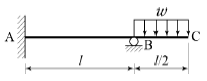
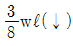
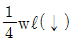
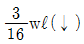
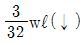
(정답률: 49%)
3. 다음과 같은 부재에서 길이의 변화량(δ)은 얼마인가? (단, 보는 균일하며 단면적 A와 탄성계수 E는 일정하다.)
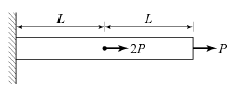
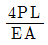
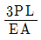
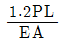
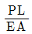
(정답률: 60%)
4. 무게 1kg의 물체를 두 끈으로 늘어뜨렸을 때 한 끈이 받는 힘의 크기 순서가 옳은 것은?
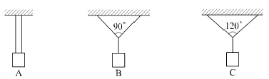
- B＞A＞C
- C＞A＞B
- A＞B＞C
- C＞B＞A
(정답률: 78%)
5. 정삼각형의 도심(G)을 지나는 여러 축에 대한 단면 2차 모멘트의 값에 대한 다음 설명 중 옳은 것은?
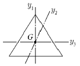
- Iy1＞Iy2
- Iy2＞Iy1
- Iy3＞Iy2
- Iy1=Iy2=Iy3
(정답률: 80%)
6. 그림과 같은 직사각형 단면의 단주에 편심축하중 P가 작용할 때 모서리 A점의 응력은?
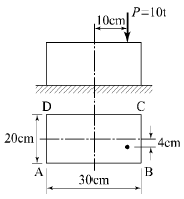
- 3.4kg/cm2
- 30kg/cm2
- 38.6kg/cm2
- 70kg/cm2
(정답률: 36%)
7. 아래 그림과 같은 단순보의 단면에서 발생하는 최대 전단응력의 크기는?
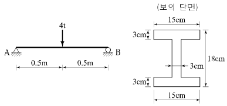
- 27.3kg/cm2
- 35.2kg/cm2
- 46.9kg/cm2
- 54.2kg/cm2
(정답률: 60%)
8. 구조해석의 기본 원리인 겹침의 원리(principle of superposition)를 설명한 것으로 틀린 것은?
- 탄성한도 이하의 외력이 작용할 때 성립한다.
- 외력과 변형이 비선형관계가 있을 때 성립한다.
- 여러 종류의 하중이 실린 경우 이 원리를 이용하면 편리하다.
- 부정정 구조물에서도 성립한다.
(정답률: 60%)
9. 그림과 같은 트러스의 부재 EF의 부재력은?
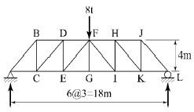
- 3ton(인장)
- 3ton(압축)
- 4ton(압축)
- 5ton(압축)
(정답률: 66%)
10. 아래 그림과 같은 캔틸레버보에서 휨모멘트에 의한 탄성변형에너지는? (단, EI는 일정)
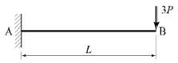
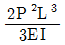
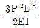
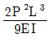
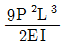
(정답률: 68%)
11. 체적탄성계수 K를 탄성계수 E와 프와송비 v로 옳게 표시한 것은?
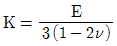
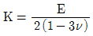
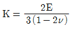
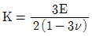
(정답률: 74%)
12. 다음과 같은 부정정보에서 A의 처짐각 θA는? (단, 보의 휨강성은 EI이다.)
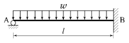
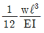
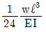
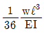
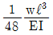
(정답률: 47%)
13. 그림과 같은 3힌지 아치의 중간 힌지에 수평하중 P가 작용할 때 A지점의 수직 반력과 수평 반력은? (단, A지점의 반력은 그림과 같은 방향을 정(+)으로 한다.)
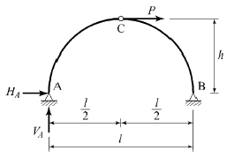
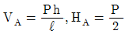
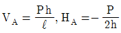
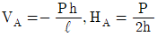
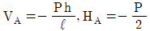
(정답률: 56%)
14. 단면이 원형(반지름 R)인 보에 휨모멘트 M이 작용 할 때 이 보에 작용하는 최대휨응력은?
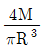
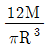
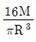
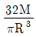
(정답률: 66%)
15. 아래 그림과 같이 게르버보에 연행하중이 이동할 때 지점 B에서 최대 휨 모멘트는?
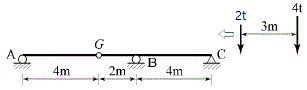
- -9t·m
- -11t·m
- -13t·m
- -15t·m
(정답률: 47%)
16. 다음 구조물에서 최대처짐이 일어나는 위치까지의 거리 Xm을 구하면?
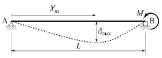
- L/2
- 2L/3
- L/√3
- 2L/√3
(정답률: 68%)
17. 그림(b)는 그림(a)와 같은 게르버보에 대한 영향선이다. 다음 설명 중 옳은 것은?
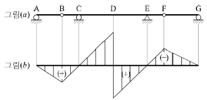
- 힌지점 B의 전단력에 대한 영향선이다.
- D점의 전단력에 대한 영향선이다.
- D점의 휨모멘트에 대한 영향선이다.
- C지점의 반력에 대한 영향선이다.
(정답률: 60%)
18. 다음 T형 단면에서 X축에 관한 단면 2차 모멘트 값은?
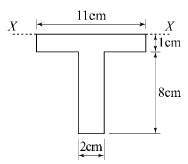
- 413cm4
- 446cm4
- 489cm4
- 513cm4
(정답률: 61%)
19. 그림과 같은 단순보에서 C점의 휨모멘트는?
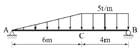
- 36t·m
- 42t·m
- 48t·m
- 54t·m
(정답률: 59%)
20. 그림과 같이 세 개의 평행력이 작용할 때 합력 R의 위치 x는?
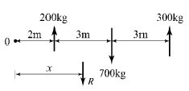
- 3.0m
- 3.5m
- 4.0m
- 4.5m
(정답률: 74%)
2과목: 측량학
21. 지형의 토공량 산정 방법이 아닌 것은?
- 각주공식
- 양단면 평균법
- 중앙단면법
- 삼변법
(정답률: 63%)
22. 그림에서
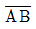
=500m, ∠a=71°33′54″, ∠b1=36°52′12″, ∠b2=39°⑤′38″, ∠c=85°36′⑤″를 관측하였을 때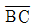
의 거리는?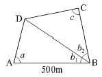
- 391m
- 412m
- 422m
- 427m
(정답률: 61%)
23. 비행고도 6000m에서 초점거리 15cm인 사진기로 수직항공사진을 획득하였다. 길이가 50m인 교량의 사진 상의 길이는?
- 0.55mm
- 1.25mm
- 3.60mm
- 4.20mm
(정답률: 59%)
24. 구하고자 하는 미지점에 평판을 세우고 3개의 기지점을 이용하여 도상에서 그 위치를 결정하는 방법은?
- 방사법
- 계선법
- 전방교회법
- 후방교회법
(정답률: 50%)
25. 클로소이드(clothoid)의 매개변수(A)가 60m, 곡선길이(L)가 30m일 때 반지름(R)은?
- 60m
- 90m
- 120m
- 150m
(정답률: 72%)
26. 하천측량에 대한 설명으로 틀린 것은?
- 제방중심선 및 종단측량은 레벨을 사용하여 직접수준측량 방식으로 실시한다.
- 심천측량은 하천의 수심 및 유수부분의 하저상황을 조사하고 횡단면도를 제작하는 측량이다.
- 하천의 수위경계선인 수애선은 평균수위를 기준으로 한다.
- 수위 관측은 지천의 합류점이나 분류점 등 수위 변화가 생기지 않는 곳을 선택한다.
(정답률: 53%)
27. 지형의 표시법에서 자연적 도법에 해당하는 것은?
- 점고법
- 등고선법
- 영선법
- 채색법
(정답률: 62%)
28. 도로 설계시에 단곡선의 외할(E)은 10m, 교각은 60°일 때, 접선장(T.L)은?
- 42.4m
- 37.3m
- 32.4m
- 27.3m
(정답률: 61%)
29. 레벨을 이용하여 표고가 53.85m인 A점에 세운 표척을 시준하여 1.34m를 얻었다. 표고 50m의 등고선을 측정하려면 시준하여야 할 표척의 높이는?
- 3.51m
- 4.11m
- 5.19m
- 6.25m
(정답률: 63%)
30. 다각측량에 관한 설명 중 옳지 않은 것은?
- 각과 거리를 측정하여 점의 위치를 결정한다.
- 근거리이고 조건식이 많아 삼각측량에서 구한 위치보다 정확도가 높다.
- 선로와 같이 좁고 긴 지역의 측량에 편리하다.
- 삼각측량에 비해 시가지 또는 복잡한 장애물이 있는 곳의 측량에 적합하다.
(정답률: 45%)
31. 기지의 삼각점을 이용하여 새로운 도근점들을 매설하고자 할 때 결합 트래버스측량(다각측량)의 순서는?
- 도상계획 → 답사 및 선점 → 조표 → 거리관측 →각관측 → 거리 및 각의 오차 배분 → 좌표계산 및 측점 전개
- 도상계획 → 조표 → 답사 및 선점 → 각관측 →거리관측 → 거리 및 각의 오차 배분 → 좌표계산 및 측점 전개
- 답사 및 선점 → 도상계획 → 조표 → 각관측 →거리관측 → 거리 및 각의 오차 배분 → 좌표계산 및 측점 전개
- 답사 및 선점 → 조표 → 도상계획 → 거리관측 → 각관측 → 좌표계산 및 측점 전개 → 거리 및 각의 오차 배분
(정답률: 63%)
32. 완화곡선에 대한 설명으로 옳지 않은 것은?
- 완화곡선은 모든 부분에서 곡률이 동일하지 않다.
- 완화곡선의 반지름은 무한대에서 시작한 후 점차 감소되어 원곡선의 반지름과 같게 된다.
- 완화곡선의 접선은 시점에서 원호에 접한다.
- 완화곡선에 연한 곡선 반지름의 감소율은 캔트의 증가율과 같다.
(정답률: 67%)
33. 축척 1:600인 지도상의 면적을 축척 1:500으로 계산하여 38.675m2을 얻었다면 실제면적은?
- 26.858m2
- 32.229m2
- 46.410m2
- 55.692m2
(정답률: 57%)
34. A, B 두 점간의 거리를 관측하기 위하여 그림과 같이 세 구간으로 나누어 측량하였다. 측선
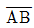
의 거리는? (단, Ⅰ:10m±0.01m, Ⅱ : 20m±0.03m, Ⅲ : 30m±0.⑤m이다.)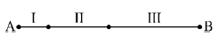
- 60m±0.09m
- 30m±0.06m
- 60m±0.06m
- 30m±0.09m
(정답률: 55%)
35. 그림과 같은 터널 내 수준측량의 관측결과에서 A점의 지반고가 20.32m일 때 C점의 지반고는? (단, 관 측값의 단위는 m이다.)(오류 신고가 접수된 문제입니다. 반드시 정답과 해설을 확인하시기 바랍니다.)
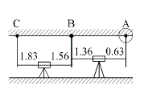
- 21.32m
- 21.49m
- 16.32m
- 16.49m
(정답률: 58%)
36. 그림의 다각측량 성과를 이용한 C점의 좌표는? (단, =100m이고, 좌표 단위는 m이다.)
- X=48.27m, Y=256.28m
- X=53.08m, Y=275.08m
- X=62.31m, Y=281.31m
- X=69.49m, Y=287.49m
(정답률: 48%)
37. A, B, C, D 네 사람이 각각 거리 8km, 12.5km, 18km, 24.5km의 구간을 왕복 수준측량하여 폐합차를 7mm, 8mm, 10mm, 12mm 얻었다면 4명 중에서 가장 정확한 측량을 실시한 사람은?
- A
- B
- C
- D
(정답률: 53%)
38. 항공사진의 특수 3점에 해당되지 않는 것은?
- 주점
- 연직점
- 등각점
- 표정점
(정답률: 68%)
39. 수준점 A, B, C에서 수준측량을 하여 P점의 표고를 얻었다. 관측거리를 경중률로 사용한 P점 표고의 최확값은?
- 57.641m
- 57.649m
- 57.654m
- 57.706m
(정답률: 68%)
40. 지구상에서 50km 떨어진 두 점의 거리를 지구곡률을 고려하지 않은 평면측량으로 수행한 경우의 거리 오차는? (단, 지구의 반지름은 6370km이다.)
- 0.257m
- 0.138m
- 0.069m
- 0.0⑤m
(정답률: 35%)
3과목: 수리학 및 수문학
41. 다음 중 유효강우량과 가장 관계가 깊은 것은?
- 직접유출량
- 기저유출량
- 지표면유출량
- 지표하유출량
(정답률: 66%)
42. 지하수의 투수계수에 관한 설명으로 틀린 것은?
- 같은 종류의 토사라 할지라도 그 간극률에 따라 변한다.
- 흙입자의 구성, 지하수의 점성계수에 따라 변한다.
- 지하수의 유량을 결정하는데 사용된다.
- 지역 특성에 따른 무차원 상수이다.
(정답률: 66%)
43. 그림과 같은 노즐에서 유량을 구하기 위한 식으로 옳은 것은? (단, 유량계수는 1.로 가정한다.)
(정답률: 48%)
44. 물의 점성계수를 μ, 동점성계수를 v, 밀도를 ρ라 할때 관계식으로 옳은 것은?
- ν=ρμ
- ν=ρ/μ
- ν=μ/ρ
- ν=1/ρμ
(정답률: 59%)
45. 폭 2.5m, 월류수심 0.4m인 사각형 위어(weir)의 유량은? (단, Francis 공식 : Q=1.84Boh3/2에 의하며, Bo : 유효폭, h : 월류수심, 접근유속은 무시하며 양단수축이다.)
- 1.117m3/s
- 1.126m3/s
- 1.145m3/s
- 1.164m3/s
(정답률: 55%)
46. 흐름의 단면적과 수로경사가 일정할 때 최대유량이 흐르는 조건으로 옳은 것은?
- 윤변이 최소이거나 동수반경이 최대일 때
- 윤변이 최대이거나 동수반경이 최소일 때
- 수심이 최소이거나 동수반경이 최대일 때
- 수심이 최대이거나 수로 폭이 최소일 때
(정답률: 60%)
47. 그림과 같이 단위폭당 자중이 3.5×106N/m인 직립식 방파제에 1.5×106N/m의 수평 파력이 작용할때, 방파제의 활동 안전율은? (단, 중력가속도=10.0m/s2, 방파제와 바닥의 마찰계수=0.7, 해수의 비중 =1로 가정하며, 파랑에 의한 양압력은 무시하고, 부력은 고려한다.)
- 1.20
- 1.22
- 1.24
- 1.26
(정답률: 26%)
48. 유역면적이 4km2이고 유출계수가 0.8인 산지하천에서 강우강도가 80mm/hr이다. 합리식을 사용한 유역 출구에서의 첨두홍수량은?
- 35.5m3/s
- 71.1m3/s
- 128m3/s
- 256m3/s
(정답률: 67%)
49. Manning의 조도계수 n=0.012인 원관을 사용하여 1m3/s의 물을 동수경사 1/100로 송수하려 할 때 적당한 관의 지름은?
- 70cm
- 80cm
- 90cm
- 100cm
(정답률: 49%)
50. 관수로 흐름에서 레이놀즈수가 500보다 작은 경우의 흐름 상태는?
- 상류
- 난류
- 사류
- 층류
(정답률: 59%)
51. 광폭 직사각형 단면 수로의 단위폭당 유량이 16m3/s일 때, 한계경사는? (단, 수로의 조도계수 n=0.02이다.)
- 3.27×10-3
- 2.73×10-3
- 2.81×10-2
- 2.90×10-2
(정답률: 38%)
52. 개수로 흐름에 관한 설명으로 틀린 것은?
- 사류에서 상류로 변하는 곳에 도수현상이 생긴다.
- 개수로 흐름은 중력이 원동력이 된다.
- 비에너지는 수로 바닥을 기준으로 한 에너지이다.
- 배수곡선은 수로가 단락(段落)이 되는 곳에 생기는 수면곡선이다.
(정답률: 46%)
53. 정지유체에 침강하는 물체가 받는 항력(drag force)의 크기가 관계가 없는 것은?
- 유체의 밀도
- Froude수
- 물체의 형상
- Reynolds수
(정답률: 45%)
54. Δt 시간동안 질량 m인 물체에 속도변화 Δv 가 발생할 때, 이 물체에 작용하는 외력 F는?
- m∙△t/△v
- m∙△v∙△t
- m∙△v/△t
- m∙△t
(정답률: 56%)
55. 다음 중 평균 강우량 산정방법이 아닌 것은?
- 각 관측점의 강우량을 산술평균하여 얻는다.
- 각 관측점의 지배면적을 가중인자로 잡아서 각 강우량에 곱하여 합산한 후 전유역면적으로 나누어서 얻는다.
- 각 등우선 간의 면적을 측정하고 전유역면적에 대한 등우선 간의 면적을 등우선 간의 평균 강우량에 곱하여 이들을 합산하여 얻는다.
- 각 관측점의 강우량을 크기순으로 나열하여 중앙에 위치한 값을 얻는다.
(정답률: 58%)
56. 강우 자료의 일관성을 분석하기 위해 사용하는 방법은?
- 합리식
- DAD 해석법
- 누가 우량 곡선법
- SDCS(Soil Conservation Service) 방법
(정답률: 65%)
57. 부체의 안정에 관한 설명으로 옳지 않은 것은?
- 경심(M)이 무게중심(G)보다 낮을 경우 안정하다.
- 무게중심(G)이 부심(B)보다 아래쪽에 있으면 안정하다.
- 부심(B)과 무게중심(G)이 동일 연직선 상에 위치할때 안정을 유지한다.
- 경심(M)이 무게중심(G)보다 높을 경우 복원 모멘트가 작용한다.
(정답률: 54%)
58. 다음 중 물의 순환에 관한 설명으로서 틀린 것은?
- 지구상에 존재하는 수자원이 대기권을 통해 지표면에 공급되고, 지하로 침투하여 지하수를 형성하는 등복잡한 반복과정이다.
- 지표면 또는 바다로부터 증발된 물이 강수, 침투 및 침루, 유출 등의 과정을 거치는 물의 이동현상이다.
- 물의 순환 과정에서 강수량은 지하수 흐름과 지표면 흐름의 합과 동일하다.
- 물의 순환과정 중 강수, 증발 및 증산은 수문기상학분야이다.
(정답률: 63%)
59. 압력수두 P, 속도수두 V, 위치수두 Z라고 할 때 정체압력수두 PS는?
- Ps = P - V - Z
- Ps = P + V + Z
- Ps = P - V
- Ps = P + V
(정답률: 54%)
60. 관수로에서 관의 마찰손실계수가 0.02, 관의 지름이 40cm일 때, 관내 물의 흐름이 100m를 흐르는 동안 2m의 마찰손실수두가 발생하였다면 과내의 유속은?
- 0.3m/s
- 1.3m/s
- 2.8m/s
- 3.8m/s
(정답률: 53%)
4과목: 철근콘크리트 및 강구조
61. 아래 T형보에서 공칭모멘트강도(Mn)는? (단, fck=24MPa, fy=400MPa, As=4764mm2)
- 812.7kN·m
- 871.6kN·m
- 912.4kN·m
- 934.5kN·m
(정답률: 56%)
62. PSC 보의 휨 강도 계산 시 긴장재의 응력 fps의 계산은 강재 및 콘크리트의 응력-변형률 관계로부터 정확히 계산할 수도 있으나 콘크리트구조기준에서는 fps를 계산하기 위한 근사적 방법을 제시하고 있다. 그 이유는 무엇인가?
- PSC 구조물은 강재가 항복한 이후 파괴까지 도달함에 있어 강도의 증가량이 거의 없기 때문이다.
- PS 강재의 응력은 항복응력 도달 이후에도 파괴시까지 점진적으로 증가하기 때문이다.
- PSC 보를 과보강 PSC 보로부터 저보강 PSC 보의 파괴상태로 유도하기 위함이다.
- PSC 구조물은 균열에 취약하므로 균열을 방지하기 위함이다.
(정답률: 46%)
63. 직사각형 보에서 계수 전단력 Vu= 70kN을 전단철 근없이 지지하고자 할 경우 필요한 최소 유효깊이 d는 약 얼마인가? (단, b=400mm, fck=21MPa, fy= 350MPa)
- d = 426mm
- d = 556mm
- d = 611mm
- d = 751mm
(정답률: 59%)
64. 철근의 겹침이음 등급에서 A급 이음의 조건은 다음 중 어느 것인가?
- 배치된 철근량이 이음부 전체 구간에서 해석결과 요구되는 소요 철근량의 3배 이상이고 소요 겹침이음 길이 내 겹침이음된 철근량이 전체 철근량의 1/3 이상인 경우
- 배치된 철근량이 이음부 전체 구간에서 해석결과 요구되는 소요 철근량의 3배 이상이고 소요 겹침이음 길이 내 겹침이음된 철근량이 전체 철근량의 1/2 이하인 경우
- 배치된 철근량이 이음부 전체 구간에서 해석결과 요구되는 소요 철근량의 2배 이상이고 소요 겹침이음 길이 내 겹침이음된 철근량이 전체 철근량의 1/3 이상인 경우
- 배치된 철근량이 이음부 전체 구간에서 해석결과 요구되는 소요 철근량의 2배 이상이고 소요 겹침이음 길이 내 겹침이음된 철근량이 전체 철근량의 1/2 이하인 경우
(정답률: 49%)
65. 철근콘크리트 부재의 전단철근에 관한 다음 설명 중 옳지 않은 것은?
- 주인장철근에 30° 이상의 각도로 구부린 굽힘철근도 전단철근으로 사용할 수 있다.
- 부재축에 직각으로 배치된 전단철군의 간격은 d/2이하, 600mm 이하로 하여야 한다.
- 최소 전단철근량은 0.35 보다 작지 않아야 한다.
- 전단철근의 설계기준항복강도는 300MPa을 초과할 수 없다.
(정답률: 55%)
66. 다음 중 반T형보의 유효폭(b)을 구할 때 고려하여야할 사항이 아닌 것은? (단, bw는 플랜지가 있는 부재의 복부폭)
- 양쪽 슬래브의 중심 간 거리
- (한쪽으로 내민 플랜지 두께의 6배) + bw
- (보의 경간의 1/12) + bw
- (인접 보와의 내측 거리의 1/2) + bw
(정답률: 59%)
67. 아래 그림과 같은 필렛용접의 형상에서 S=9mm일 때 목두께 a의 값으로 적당한 것은?
- 5.46mm
- 6.36mm
- 7.26mm
- 8.16mm
(정답률: 59%)
68. 옹벽에서 T형보로 설계하여야 하는 부분은?
- 뒷부벽식 옹벽의 뒷부벽
- 뒷부벽식 옹벽의 전면벽
- 앞부벽식 옹벽의 저판
- 앞부벽식 옹벽의 앞부벽
(정답률: 66%)
69. 복철근 보에서 압축철근에 대한 효과를 설명한 것으로 적절하지 못한 것은?
- 단면 저항 모멘트를 크게 증대시킨다.
- 지속하중에 의한 처짐을 감소시킨다.
- 파괴시 압축 응력의 깊이를 감소시켜 연성을 증대시킨다.
- 철근의 조립을 쉽게한다.
(정답률: 37%)
70. PSC 부재에서 프리스트레스의 감소 원인중 도입후에 발생하는 시간적 손실의 원인에 해당하는 것은?
- 콘크리트의 크리프
- 정착장치의 활동
- 콘크리트의 탄성수축
- PS 강재와 쉬스의 마찰
(정답률: 59%)
71. 휨부재 설계시 처짐계산을 하지 않아도 되는 보의 최소 두께를 콘크리트구조기준에 따라 설명한 것으로 틀린 것은? (단, 보통중량콘크리트(mc=2300kg/m3)와 fy는 400MPa인 철근을 사용한 부재이며, ℓ 부재의 길이이다.)
- 단순지지된 보 : ℓ/16
- 1단 연속 보 : ℓ/18.5
- 양단 연속 보 : ℓ/21
- 캔틸레버 보 : ℓ/12
(정답률: 60%)
72. 다음 중 콘크리트구조물을 설계할 때 사용하는 하중인 “활하중(live load)”에 속하지 않는 것은?
- 건물이나 다른 구조물의 사용 및 점용에 의해 발생되는 하중으로서 사람, 가구, 이동칸막이 등의 하중
- 적설하중
- 교량 등에서 차량에 의한 하중
- 풍하중
(정답률: 55%)
73. 그림과 같은 두께 13mm의 플레이트에 4개의 볼트 구멍이 배치 되어있을 때 부재의 순단면적은? (단, 구멍의 직경은 24mm이다.)
- 4⑤6mm2
- 3916mm2
- 3775mm2
- 3524mm2
(정답률: 59%)
74. 다음 중 용접부의 결함이 아닌 것은?
- 오버랩(overlap)
- 언더컷(undercut)
- 스터드(stud)
- 균열(crack)
(정답률: 61%)
75. 철근콘크리트 보를 설계할 때 변화구간에서 강도감소계수(ø)를 구하는 식으로 옳은 것은? (단, 나선철근으로 보강되지 않은 부재이며, εt는 최외단 인장철근의 순인장변형률이다.)
(정답률: 61%)
76. 아래 그림과 같은 복철근 직사각형보에서 압축연단에서 중립축까지의 거리(c)는? (단, As=4764mm2, As=1284mm2, fck=38MPa, fy=400MPa)(오류 신고가 접수된 문제입니다. 반드시 정답과 해설을 확인하시기 바랍니다.)
- 143.74mm
- 157.86mm
- 168.62mm
- 178.41mm
(정답률: 55%)
77. 그림과 같은 띠철근 기둥에서 띠철근의 최대 간격은? (단, D10의 공칭직경은 9.5mm, D32의 공칭직경은 31.8mm)
- 400mm
- 456mm
- 500mm
- 509mm
(정답률: 60%)
78. 단순 지지된 2방향 슬래브의 중앙점에 집중하중 P가 작용할 때 경간비가 1:2라면 단변과 장변이 부담하는 하중비(PS : PL)는? (단, PS : 단변이 부담하는하중, PL : 장변이 부담하는 하중)
- 1:8
- 8:1
- 1:16
- 16:1
(정답률: 51%)
79. 경간 6m인 단순 직사각형 단면(b=300mm, h=400mm)보에 계수하중 30kN/m가 작용할 때 PS강재가 단면도심에서 긴장되며 경간 중앙에서 콘크리트 단면의 하연 응력이 0이 되려면 PS강재에 얼마의 긴장력이 작용되어야 하는가?
- 18⑤kN
- 2025kN
- 3⑤4kN
- 3557kN
(정답률: 62%)
80. 철근콘크리트가 성립하는 이유에 대한 설명으로 잘못된 것은?
- 철근과 콘크리트와의 부착력이 크다.
- 콘크리트 속에 묻힌 철근은 녹슬지 않고 내구성을 갖는다.
- 철근과 콘크리트의 무게가 거의 같고 내구성이 같다.
- 철근과 콘크리트는 열에 대한 팽창계수가 거의 같다.
(정답률: 57%)
5과목: 토질 및 기초
81. 어떤 시료에 대해 액압 1.0kg/cm2가해 각 수직변위에 대응하는 수직하중을 측정한 결과가 아래 표와 같다. 파괴시의 축차응력은? (단, 피스톤의 지름과시료의 지름은 같다고 보며, 시료의 단면적 AO=18cm2, 길이 L=14cm이다.)
- 3.⑤kg/cm2
- 2.55kg/cm2
- 2.⑤kg/cm2
- 1.55kg/cm2
(정답률: 32%)
82. 전단마찰력이 25°인 점토의 현장에 작용하는 수직응력이 5t/m2이다. 과거 작용했던 최대 하중이 10t/m2이라고 할 때 대상지반의 정지토압계수를 추정하면?
- 0.04
- 0.57
- 0.82
- 1.14
(정답률: 32%)
83. 무게 3ton인 단동식 증기 hammer를 사용하여 낙하고 1.2m에서 pile을 타입할 때 1회 타격당 최종 침하량이 2cm 이었다. Engineering News 공식을 사용하여 허용 지지력을 구하면 얼마인가?
- 13.3t
- 26.7t
- 80.8t
- 160t
(정답률: 41%)
84. 점토 지반의 강성 기초의 접지압 분포에 대한 설명으로 옳은 것은?
- 기초 모서리 부분에서 최대응력이 발생한다.
- 기초 중앙 부분에서 최대응력이 발생한다.
- 기초 밑면의 응력은 어느 부분이나 동일하다.
- 기초 밑면에서의 응력은 토질에 관계없이 일정하다.
(정답률: 59%)
85. 다음 그림과 같이 피압수압을 받고 있는 2m 두께의 모래층이 있다. 그 위로 포화된 점토층을 5m 깊이로 굴착하는 경우 분사현상이 발생하지 않기 위한 수심(h)은 최소 얼마를 초과하도록 하여야 하는가?
- 1.3m
- 1.6m
- 1.9m
- 2.4m
(정답률: 47%)
86. 내부마찰각 øu=0, 점착력 cu=4.5t/m2, 단위중량이 1.9t/m3되는 포화된 점토층에 경사각 45°로 높이 8m인 사면을 만들었다. 그림과 같은 하나의 파괴면을 가정했을 때 안전율은? (단, ABCVD의 면적은 70m이고, ABCD의 무게중심은 O점에서 4.5m거리에 위치하며, 호 AC의 길이는 20.0m이다.)
- 1.2
- 1.8
- 2.5
- 3.2
(정답률: 51%)
87. 다음 중 임의 형태 기초에 작용하는 등분포하중으로 인하여 발생하는 지중응력계산에 사용하는 가장 적합한 계산법은?
- Boussinesq 법
- Osterberg 법
- Newmark 영향원법
- 2:1 간편법
(정답률: 44%)
88. 노건조한 흙 시료의 부피가 1000cm3, 무게가 1700g, 비중이 2.65이라면 간극비는?
- 0.71
- 0.43
- 0.65
- 0.56
(정답률: 51%)
89. 흙의 공학적 분류방법 중 통일분류법과 관계없는 것은?
- 소성도
- 액성한계
- no.200체 통과율
- 군지수
(정답률: 64%)
90. 수조에 상방향의 침투에 의한 수두를 측정한 결과, 그림과 같이 나타났다. 이 때, 수조 속에 있는 흙에 발생하는 침투력을 나타낸 식은? (단, 시료의 단면적은 A, 사료의 길이는 L, 시료의 포화단위중량은 γsat, 물의 단위중량은 γw이다.)
(정답률: 43%)
91. 포화단위중량이 1.8t/m인 흙에서의 한계동수경사는 얼마인가?
- 0.8
- 1.0
- 1.8
- 2.0
(정답률: 51%)
92. 입경이 균일한 도포화된 사질지반에 지진이나 진동등 동적하중이 작용하면 지반에서는 일시적으로 전단강도를 상실하게 되는데, 이러한 현상을 무엇이라고 하는가?
- 분사현상(quice sand)
- 틱소트로피 현상(Thixotropy)
- 히빙현상(heaving)
- 액상화현상(liquefaction)
(정답률: 49%)
93. 다음 시료채취에 사용되는 시료기(sampler) 중 불교란시료 채취에 사용되는 것만 고른 것으로 옳은 것은?
- (1), (2), (3)
- (1), (2), (4)
- (1), (3), (4)
- (2), (3), (4)
(정답률: 42%)
94. 점토의 다짐에서 최적함수보다 함수비가 적은 건조측 및 함수비가 많은 습윤측에 대한 설명을 옳지 않은 것은?
- 다짐의 목적에 따라 습윤 및 건조측으로 구분하여 다짐계획을 세우는 것이 효과적이다.
- 흙의 강도 증가가 목적인 경우, 건조측에서 다지는 것이 유리하다.
- 습윤측에서 다지는 경우, 투수계수 증가 효과가 크다.
- 다짐의 목적이 차수를 목적으로 하는 경우, 습윤측에서 다지는 것이 유리하다.
(정답률: 48%)
95. 어떤 지반에 대한 토질시험결과 점착력 c=0.50kg/cm2, 흙의 단위중량 γ=2.0t/m3이었다. 그 지반에 연직으로 7m를 굴착했다면 안전율은 얼마인가? (단, ø=0 이다.)
- 1.43
- 1.51
- 2.11
- 2.61
(정답률: 41%)
96. 다음 그림과 같이 점토질 지반에 연속기초가 설치되어 있다. Terzaghi 공식에 의한 이 기초의 허용 지지력은? (단, ø=0이며, 폭(B)=2m, Nc=5.14, Nq=1.0, Nγ=0, 안전율 FS=3이다.)
- 6.4t/m2
- 13.5t/m2
- 18.5t/m2
- 40.49t/m2
(정답률: 47%)
97. Meyerhof의 극한지지력 공식에서 사용하지 않는 계수는?
- 형상계수
- 깊이계수
- 시간계수
- 하중경사계수
(정답률: 53%)
98. 토질조사에 대한 설명 중 옳지 않은 것은?
- 사운딩(Sounding)이란 지중에 저항체를 삽입하여 토층의 성상을 파악하는 현장 시험이다.
- 불교란시료를 얻기 위해서 Foil Sampler, Thin wall tube sampler 등이 사용된다.
- 표준관입시험은 로드(Rod)의 길이가 길어질수록 N치가 작게 나온다.
- 베인 시험은 정적인 사운딩이다.
(정답률: 50%)
99. 2.0kg/cm2의 구속응력을 가하여 시료를 완전히 압밀시킨 다음, 축차응력을 가하여 비배수 상태로 전단시켜 파괴시 축변형률 εf=10%, 축차응력 Δσf=2.8kg/cm2, 간극수압 Δuf=2.1kg/cm2를 얻었다. 파괴시 간극수압계수 A는? (단, 간극수압계수 B는 1.0으로 가정한다.)
- 0.44
- 0.75
- 1.33
- 2.27
(정답률: 35%)
100. 아래 그림과 같이 3개의 지층으로 이루어진 지반에서 수직방향 등가투수계수는?
- 2.516×10-6cm/s
- 1.274×10-5cm/s
- 1.393×10-4cm/s
- 2.0×10-2cm/s
(정답률: 57%)
6과목: 상하수도공학
101. 도수(conveyance of water)시설에 대한 설명으로 옳은 것은?
- 상수원으로부터 원수를 취수하는 시설이다.
- 원수를 음용 가능하게 처리하는 시설이다.
- 배수지로부터 급수관까지 수송하는 시설이다.
- 취수원으로부터 정수시설까지 보내는 시설이다.
(정답률: 69%)
102. 양수량이 50m3/min 이고 전양정이 8m 일 때 펌프의 축동력은? (단, 펌프의 효율(n)=0.8)
- 65.2kW
- 73.6kW
- 81.5kW
- 92.4kW
(정답률: 59%)
103. 계획오수량 중 계획시간최대오수량에 대한 설명으로 옳은 것은?
- 계획1일최대오수량의 1시간당 수량의 1.3~1.8배를 표준으로 한다.
- 계획1일최대오수량의 70~80%를 표준으로 한다.
- 1인1일최대오수량의 10~20%로 한다.
- 계획1일평균오수량의 3배 이상으로 한다.
(정답률: 50%)
104. 완속여과와 급속여과의 비교 설명으로 틀린 것은?
- 원수가 고농도의 현탁물일 때는 급속여과가 유리하다.
- 여과속도가 다르므로 용지 면적의 차이가 크다.
- 여과의 손실수두는 급속여과보다 완속여과가 크다.
- 완속여과는 약품처리 등이 필요하지 않으나 급속여과는 필요하다.
(정답률: 54%)
1⑤. 수질오염 지표항목 중 COD에 대한 설명으로 옳지 않은 것은?
- COD는 해양오염이나 공장폐수의 오염지표로 사용된다.
- 생물분해 가능한 유기물도 COD로 측정할 수 있다.
- NaNO2, SO-2는 COD값에 영향을 미친다.
- 유기물 농도값은 일반적으로 COD＞TOD＞TOC＞BOD이다.
(정답률: 64%)
106. 고형물 농도가 30mg/L인 원수를 Alum 25mg/L를 주입하여 응집 처리하고자 한다. 1000m3/day 원수를 처리할 때 발생 가능한 이론적 최종 슬러지(A1(OH)3)의 부피는? (단, Alum=A12(SO4)3⋅18H2O, 최종 슬러지 고형물농도=2%, 고형물 비중=1.2)
- 1.1m3/day
- 1.5m3/day
- 2.1m3/day
- 2.5m3/day
(정답률: 27%)
107. 다음 중 하수슬러지 개량방법에 속하지 않는 것은?
- 세정
- 열처리
- 동결
- 농축
(정답률: 43%)
108. 합리식을 사용하여 우수량을 산정할 때 필요한 자료가 아닌 것은?
- 강우강도
- 유출계수
- 지하수의 유입
- 유달시간
(정답률: 61%)
109. 일반적인 하수처리장의 2차침전지에 대한 설명으로 옳지 않은 것은?
- 표면부하율은 표준활성슬러지의 경우, 계획1일최대오수량에 대하여 20~30m3/m2·d로 한다.
- 유효수심은 2.5~4m를 표준으로 한다.
- 침전시간은 계획1일평균오수량에 따라 정하며 5~10시간으로 한다,
- 수면의 여유고는 40~60cm 정도로 한다.
(정답률: 50%)
110. 어느 도시의 인구가 10년 전 10만명에서 현재는 20만명이 되었다. 등비급수법에 의한 인구증가를 보였다고 하면 연평균 인구증가율은?
- 0.08947
- 0.07177
- 0.06251
- 0.03589
(정답률: 54%)
111. 하수도용 펌프 흡입구의 유속에 대한 설명으로 옳은 것은?
- 0.3~0.5m/s를 표준으로 한다.
- 1.0~1.5m/s를 표준으로 한다.
- 1.5~3.0m/s를 표준으로 한다.
- 5.0~10.0m/s를 표준으로 한다.
(정답률: 51%)
112. 상수도 배수관망 중 격자식 배수관망에 대한 설명으로 틀린 것은?
- 물이 정체하지 않는다.
- 사고시 단수구역이 작아진다.
- 수리계산이 복잡하다.
- 제수밸브가 적게 소요되며 시공이 용이하다.
(정답률: 62%)
113. 정수처리 시 트리할로메탄 및 곰팡이 냄새의 생성을 최소화하기 위해 침전지와 여과지 사이에 염소제를 주입하는 방법은?
- 전염소처리
- 중간염소처리
- 후염소처리
- 이중염소처리
(정답률: 56%)
114. 호수의 부영양화에 대한 설명으로 틀린 것은?
- 부영양화는 정체성 수역의 상층에서 발생하기 쉽다.
- 부영양화된 수원의 상수는 냄새로 인하여 음료수로 부적당하다.
- 부영양화로 식물성 플랑크톤의 번식이 증가되어 투명도가 저하된다.
- 부영양화로 생물활동이 활발하여 깊은 곳의 용존산소가 풍부하다.
(정답률: 67%)
115. 콘크리트 하수관의 내부 천정이 부식되는 현상에 대한 대응책으로 틀린 것은?
- 방식재료를 사용하여 관을 방호한다.
- 하수 중의 유황 함유량을 낮춘다.
- 관내의 유속을 감소시킨다.
- 하수에 염소를 주입하여 박테리아 번식을 억제한다.
(정답률: 63%)
116. 하수 배제방식의 특징에 관한 설명으로 틀린 것은?
- 분류식은 합류식에 비해 우천시 월류의 위험이 크다.
- 합류식은 분류식(2계통 건설)에 비해 건설비가 저렴하고 시공이 용이하다.
- 합류식은 단면적이 크기 때문에 검사, 수리 등에 유리하다.
- 분류식은 강우초기에 노면의 오염물질이 포함된 세정수가 직접 하천 등으로 유입된다.
(정답률: 53%)
117. 1인 1일 평균 급수량의 일반적인 증가·감소에 대한설명으로 틀린 것은?
- 기온이 낮은 지방일수록 증가한다.
- 인구가 많은 도시일수록 증가한다.
- 문명도가 낮은 도시일수록 감소한다.
- 누수량이 증가하면 비례하여 증가한다.
(정답률: 65%)
118. 하수고도처리에서 인을 제거하기 위한 방법이 아닌 것은?
- 응집제첨가 활성슬러지법
- 활성탄흡착법
- 정석탈인법
- 혐기호기조합법
(정답률: 43%)
119. 상수도 계통에서 상수의 공급과정으로 옳은 것은?
- 취수 - 정수 - 도수 - 배수 - 송수 - 급수
- 취수 - 도수 - 정수 - 송수 - 배수 - 급수
- 취수 - 배수 - 정수 - 도수 - 급수 - 송수
- 취수 - 정수 - 송수 - 배수 - 도수 - 급수
(정답률: 73%)
120. 우수관거 및 합류관거 내에서의 부유물 침전을 막기 위하여 계획우수량에 대하여 요구되는 최소 유속은?
- 0.3m/s
- 0.6m/s
- 0.8m/s
- 1.2m/s
(정답률: 41%)